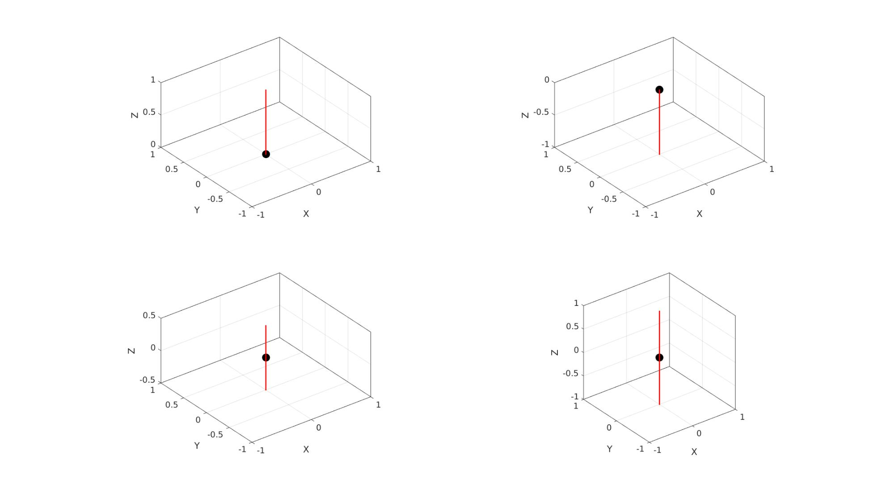
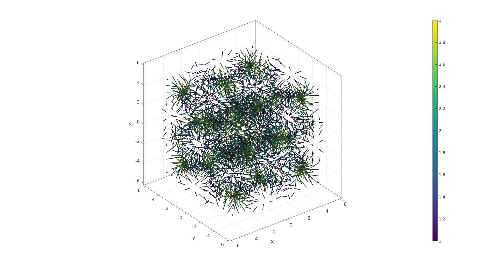
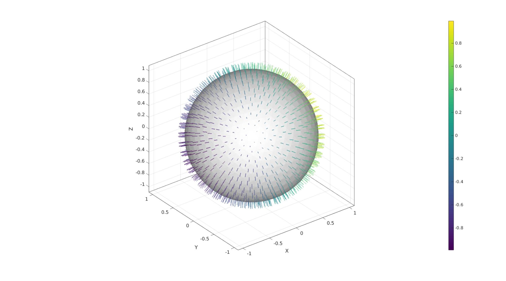

quiverLine
Below is a demonstration of the features of the quiverLine function
Contents
clear; close all; clc;
Syntax
|[hp]=quiverLine(P,V,vecSize,colorSpec,lineWidth,quiverStyleOpt,alphaLevel);
Description
This function is a short-hand version of the quiver3Dpatch function which enables colormapped and 3D rendering of directional or vector data. The inputs are: P: The vector origins V: The vectors vecSize: The vector sizes colorSpec: The color data which is a string, rgb values or colormapped arrays lineWidth: Line width of the vector quiverStyleOpt: The quiver style, which is 1=normal arrow, 2=Arrive at origin, 3=Pass through origin, 4=Two-sided. alphaLevel: the transparancy level
Examples
clear; close all; clc;
Plot settings
cMap=viridis(250); fontSize=15;
P=[0 0 0]; V=[0 0 1]; quiverStyleOpt_set=[1 2 3 4]; vecLength=1; lineWidth=2; vecAlpha=1; cFigure; for q=1:1:4 subplot(2,2,q); hold on; plotV(P,'k.','MarkerSize',50); quiverLine(P,V,vecLength,'r',lineWidth,quiverStyleOpt_set(q),vecAlpha); axisGeom; end drawnow;
Example for multidimensional image data: colormap driven vectors
Simulating 3D volume and vector data
n=15; [X,Y,Z]=meshgrid(linspace(-4.77,4.77,n)); phi=(1+sqrt(5))/2; M=2 - (cos(X + phi*Y) + cos(X - phi*Y) + cos(Y + phi*Z) + cos(Y - phi*Z) + cos(Z - phi*X) + cos(Z + phi*X)); [u,v,w] = gradient(M); %Vector components C=hypot(hypot(u(:),v(:)),w(:)); %Vector lenghts P=[X(:) Y(:) Z(:)]; V=[u(:) v(:) w(:)];
cFigure; quiverLine(P,V,C,C); colormap(cMap); colorbar; axisGeom(gca,fontSize); camlight headlight; lighting flat clim([1 3]) drawnow;
Example for face normal plotting with variable color
See also patchNormPlot
Creating a surface model
[F,V]=geoSphere(3,1); [N,Vn]=patchNormal(F,V); %Get face normals Cn=Vn(:,1); %Color data
vecLength=0.1; lineWidth=2; quiverStyleOpt=1; vecAlpha=0.5; cFigure; gpatch(F,V,'w','none',0.8); quiverLine(Vn,N,vecLength,Cn,lineWidth,quiverStyleOpt,vecAlpha); colormap(cMap); colorbar; axisGeom(gca,fontSize); camlight headlight; drawnow;

GIBBON www.gibboncode.org
Kevin Mattheus Moerman, gibbon.toolbox@gmail.com
GIBBON footer text
License: https://github.com/gibbonCode/GIBBON/blob/master/LICENSE
GIBBON: The Geometry and Image-based Bioengineering add-On. A toolbox for image segmentation, image-based modeling, meshing, and finite element analysis.
Copyright (C) 2006-2023 Kevin Mattheus Moerman and the GIBBON contributors
This program is free software: you can redistribute it and/or modify it under the terms of the GNU General Public License as published by the Free Software Foundation, either version 3 of the License, or (at your option) any later version.
This program is distributed in the hope that it will be useful, but WITHOUT ANY WARRANTY; without even the implied warranty of MERCHANTABILITY or FITNESS FOR A PARTICULAR PURPOSE. See the GNU General Public License for more details.
You should have received a copy of the GNU General Public License along with this program. If not, see http://www.gnu.org/licenses/.